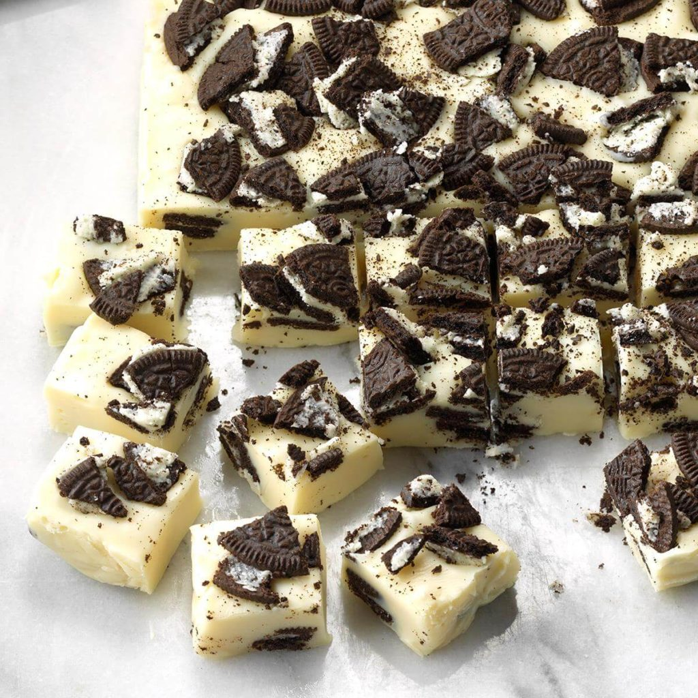

Cookies ‘n’ Cream Fudge
Ingredients
16 Oreo cookies, broken into chunks, divided
1 can (14 ounces) sweetened condensed milk
2 tablespoons butter
2-2/3 cups white baking chips
1 teaspoon vanilla extract
Crushed peppermint candies, optional
Directions
- Line an 8-in. square dish with aluminum foil; coat with cooking spray. Place half of the broken cookies in pan.
- In a heavy saucepan, combine the milk, butter and chips; cook and stir over low heat until chips are melted. Remove from heat; stir in vanilla.
- Pour over cookies in pan. Sprinkle with remaining cookies and peppermint candies if desired. Cover and refrigerate for at least 1 hour. Cut into squares.
Nutrition Facts
1 piece: 133 calories, 7g fat (4g saturated fat), 8mg cholesterol, 64mg sodium, 17g carbohydrate (8g sugars, 0 fiber), 2g protein.
Total Time
Prep: 25 min. + chilling